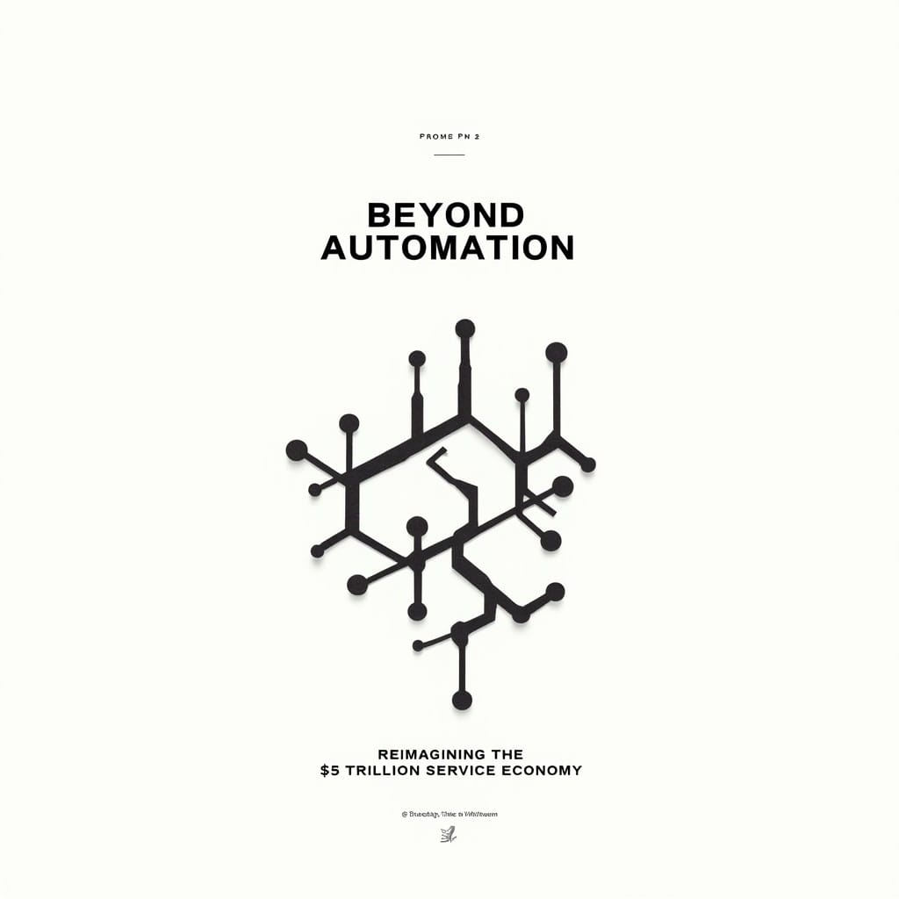
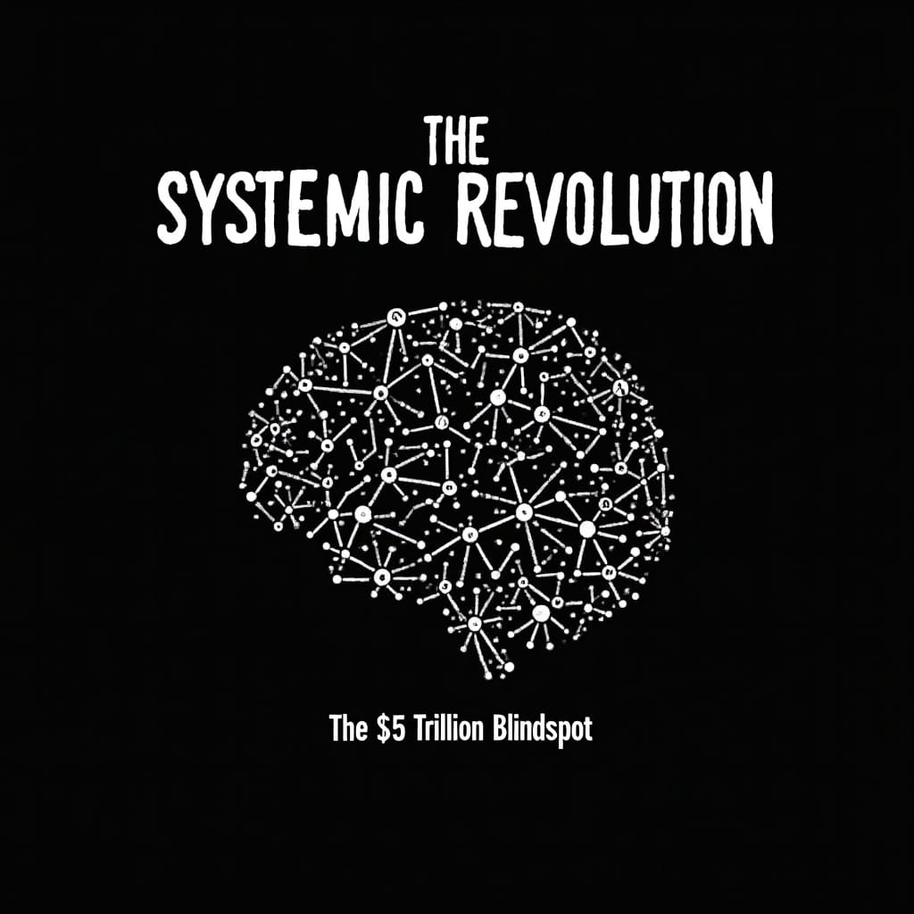

From Tasks to Systems: The True AI Revolution in Services
Silicon Valley obsesses over AI's party tricks while missing the $5 trillion revolution hiding in plain sight. The real transformation isn't about automation—it's about reimagining how entire industries create and capture value.
"The greatest danger in times of turbulence is not the turbulence; it is to act with yesterday's logic."

The Great Cognitive Leap
Venture capitalists, especially in Silicon Valley, are trapped in a hall of mirrors, mesmerized by AI's parlor tricks while missing the fundamental transformation reshaping our economic landscape. Tech leaders marvel at AI's ability to write sonnets, debate philosophy, or generate Super Bowl ads. Yet they remain blind to a more profound revolution: the complete reconceptualization of how value is created, captured, and distributed in modern economies.
This isn't just another wave of automation or digital transformation. We're witnessing what I call the "ontological revolution"—a fundamental shift in how we understand and organize human economic activity. The stakes? Nothing less than the future architecture of our entire service economy.

The $5 Trillion Blindspot
After a decade studying technology's impact on industries, I've uncovered a persistent and costly misunderstanding. The conventional narrative focuses on a $5 trillion opportunity in service sector wages—a figure representing potential automation savings across industries like law, finance, and consulting. But this framing fundamentally misses the point.
This isn't about cost savings or efficiency gains. It's about understanding that every dollar in that $5 trillion represents not just a task to be automated, but a node in vast networks of knowledge, relationships, and value creation waiting to be reimagined. When we begin to understand services not as collections of tasks but as complex adaptive systems, we see that the true opportunity isn't in automation—it's in the fundamental reorganization of how value is created in the modern economy.

Let's make this concrete: Consider how the legal sector currently approaches AI transformation. Most discussions center on automating document review or streamlining basic research—a $176 billion opportunity, by conventional metrics. But this mechanistic view catastrophically misses the point.
A modern law firm isn't a mere assembly line of legal tasks—it's a living intelligence network where each element influences the whole:
- A single case decision ripples across practice areas, reshaping precedent landscapes
- Client relationships form intricate webs of strategic opportunities and obligations
- Knowledge flows between partners, associates, and staff create emergent expertise
- Regulatory changes trigger cascading effects across entire client portfolios
This dynamic complexity reveals why the conventional AI approach is fundamentally flawed. You can't "automate" a law firm any more than you can automate an ecosystem. What you can do—and this is where the real revolution lies—is reimagine how the entire system creates, captures, and distributes value.
This is the essence of what I call the "ontological revolution" in services: not just changing how we do things, but fundamentally transforming what things are. In this new paradigm, a law firm isn't a collection of lawyers performing tasks—it's a knowledge network that happens to manifest as a legal services organization.
Beyond the Automation Narrative
Consider Palantir, often dismissed as a mere "glorified consultancy." This mischaracterization blinds us to both the brilliance and the darkness of their model. Their Forward Deployed Engineers pioneered something far more profound than consultation—they created a new category of work entirely: "ontological engineering." These teams don't just map organizational systems; they reshape the very fabric of institutional knowledge and power dynamics.
The elegance of Palantir's approach lies in its recognition that organizations are living systems of information, decision flows, and power relationships. Their engineers don't just solve problems—they rebuild the entire architecture of how institutions think and act. This is precisely what makes their model both revolutionary and deeply concerning.
Consider the implications: When a single company can reshape how institutions process information, make decisions, and exercise power, we're no longer talking about mere digital transformation—we're discussing the privatization of institutional cognition itself. While Palantir's approach brilliantly demonstrates the potential of systemic intelligence, it also serves as a stark warning about the concentration of this kind of power in private hands.
This systemic rewiring isn't isolated to the legal sector—it's repeating across every knowledge-intensive industry, though few recognize its true implications. Consider how this transformation manifests:
In finance, the revolution isn't about automating transactions—it's about reconceptualizing what a financial institution actually is. Leading firms are discovering they're not transaction processors but complex relationship orchestrators:
- Trading desks become pattern recognition networks
- Risk departments transform into predictive intelligence systems
- Client relationships evolve from service delivery to strategic knowledge partnerships
In consulting, the traditional model of selling expertise by the hour is giving way to something far more powerful. Elite firms are morphing from advice-givers into system architects:
- Project teams become permanent transformation partners
- Deliverables shift from recommendations to living knowledge systems
- Client relationships transform from periodic engagement to continuous co-evolution
In healthcare, the transformation extends far beyond electronic medical records or AI diagnostics. The entire concept of healthcare delivery is being reconstituted:
- Hospitals evolve from treatment centers to health optimization networks
- Patient relationships shift from episodic care to continuous wellness management
- Medical knowledge transforms from static expertise to dynamic learning systems
The revolution isn't in the size of the change, but in its DNA. They aren’t just getting an upgrade – they're getting a complete overhaul and makeover. Similar to when we switched from candles to light bulbs. We didn't just get brighter rooms or bigger screens; we unlocked a whole new world of possibilities. Suddenly, we could work at night, create new forms of entertainment, and reshape entire cities. That's the scale of change we're talking about here.
For the GenZ and GenA folks reading this, this is the equivalent of let’s say — upgrading from your iPhone 15 to your iPhone16 because you think Apple Intelligence is going to make everything okay and provide you with the ability to create your new forms of entertainment which they can properly ensure a 30% cut off. Now, we're not only just making things faster or more efficient, we're opening doors to ideas and innovations that we couldn't even imagine before. Like the iPhone 17!

The Mathematics of Transformation
To grasp the full scope of this revolution, we need to look beyond traditional metrics. The raw numbers are staggering:
- Business Operations: $1.4T (13.5M employed)
- Office & Administrative: $883B (18M employed)
- Financial Operations: $560B (6.5M employed)
- Computer & Data Science: $585B (5M employed)
- Legal Services: $176B (1.4M employed)
But these figures tell only the surface story. The true mathematics of transformation isn't about wage replacement—it's about network effects and system dynamics:
Network Value Multiplication: When we optimize a single node in these networks (say, a paralegal role in a law firm), we're not just improving one $85,000 salary's worth of work. We're enhancing every relationship and interaction that role touches—often by orders of magnitude. A single optimized node can create ripple effects worth millions in previously uncapturable value.
Exponential Knowledge Scaling: Each professional in these sectors isn't just a salary figure—they're a nexus of relationships, knowledge, and decision-making potential:
- A business operations manager touches an average of 150 decision processes monthly
- A financial analyst influences $50M+ in capital allocation yearly
- A senior lawyer affects thousands of future legal outcomes through precedent-setting work
System-Level Value Creation: The real mathematics here isn't linear—it's exponential. When we reimagine these roles as system components rather than isolated functions, we unlock entirely new categories of value:
- Knowledge networks that grow more valuable with each interaction
- Decision systems that become more intelligent with each choice
- Relationship webs that generate compound returns over time
This isn't about the $3.6 trillion in combined wages—it's about the potential to create tens of trillions in new value by fundamentally reorganizing how these systems operate. We're not looking at a cost-saving exercise; we're examining the largest value creation opportunity in economic history.
The New Architecture of Value
What we're witnessing demands a new framework for understanding and designing service organizations. I call this the Service Intelligence Architecture (SIA)—a systematic approach to mapping, optimizing, and evolving knowledge-intensive organizations. This isn't just another management framework; it's a fundamental reconceptualization of how modern organizations function.

The SIA operates across three interconnected dimensions:
- Relationship Networks: The Neural System
- Dynamic Client Ecosystems: Map and optimize the web of client relationships, needs, and opportunities
- Knowledge Synapses: Track and enhance how expertise flows between teams and individuals
- Power Dynamics: Understand and optimize formal and informal influence structures
- Resource Webs: Model how resources, attention, and effort flow through the organization
- Regulatory Interfaces: Map how external constraints shape internal behaviors
- Value Creation Mechanisms: The Cognitive System
- Decision Architecture: Design and optimize how choices flow through the organization
- Knowledge Amplification: Create systems that make expertise more accessible and actionable
- Risk Intelligence: Build dynamic risk assessment and response capabilities
- Innovation Pathways: Design systems that systematically generate and capture new value
- Quality Evolution: Develop self-improving quality systems
- Temporal Dynamics: The Evolutionary System
- Adaptive Synchronization: Align organizational rhythms with value creation patterns
- Crisis Intelligence: Build systems that get stronger under stress
- Growth Mechanics: Design scalable value creation processes
- Learning Loops: Create systematic knowledge capture and enhancement
- Future Sensing: Develop organizational capacity to detect and respond to emerging patterns

Each dimension represents not just a set of processes to optimize, but a complete system to reimagine. The power of SIA lies in understanding how these systems interact and reinforce each other.
The Systemic Revolution
When these three dimensions of SIA interact, we enter the realm of what I call "Systemic Intelligence"—where organizations don't just process information and make decisions, but evolve and generate new forms of value autonomously. This isn't theoretical; we're already seeing early examples:
Financial Services Revolution
- Goldman Sachs transformed from a traditional investment bank into a "financial operating system"
- Their Marquee platform isn't just a trading tool—it's a living knowledge network that gets more valuable with every interaction
- Result: 40% higher client engagement and entirely new revenue streams previously impossible to capture
Healthcare Transformation
- Cleveland Clinic's shift from hospital network to "health intelligence system"
- Patient data doesn't just inform treatment—it creates predictive models that improve system-wide outcomes
- Result: 28% reduction in readmissions and emergence of preventive care models that weren't previously possible
Professional Services Evolution
- McKinsey's transformation from consulting firm to "knowledge acceleration platform"
- Client engagements don't end—they evolve into continuous learning systems
- Result: 3x increase in client lifetime value and creation of entirely new advisory capabilities
But here's the crucial insight: These organizations are undergoing an ontological transformation that transcends mere operational improvement. They're evolving into novel institutional forms that challenge traditional organizational taxonomy. Through the emergence of Systemic Intelligence, they're not simply optimizing existing value chains—they're generating previously undefined categories of value creation that exist outside conventional economic frameworks. This represents a paradigmatic shift from linear service delivery to complex adaptive value systems capable of autonomous evolution and emergence.
The implications are profound: Organizations that master Systemic Intelligence don't just outperform their competitors—they make traditional competition irrelevant by operating in entirely new value dimensions.
Crossing the Systemic Threshold
We stand at more than an inflection point—we face a phase transition in organizational evolution, where the familiar laws of business physics begin to break down. The path forward demands not just courage and clarity, but a fundamental rewiring of how we conceive value itself. What we're witnessing transcends the comfortable narrative of technological disruption. This isn't the next chapter in digital transformation—it's an entirely new book, written in a language most leaders haven't yet learned to read. We're experiencing nothing less than a wholesale reconstruction of economic reality, where the basic units of value creation, capture, and distribution are being rewritten at the atomic level.
The leaders who'll actually matter in this new era aren't the ones clutching their AI whitepapers - they're the ones who've figured out these three brutal truths:
- The Power of Systemic Design: The future belongs not to those who can build the best AI models, but to those who can design and nurture the most effective value-creating systems. This requires moving beyond traditional organizational thinking to embrace the principles of systemic intelligence.
- The Imperative of Network Evolution": Success isn't about optimizing individual components—it's about creating conditions where entire networks of relationships, knowledge, and capabilities can evolve and strengthen autonomously. Organizations must become living systems, not just efficient machines.
- The New Mathematics of Value: Traditional metrics of success—revenue, profit, market share—are becoming lagging indicators. The new measures that matter are network effects, knowledge acceleration, and system resilience. The emergence of systems of intelligence will accelerate value creation beyond anything in economic history.
This transformation isn't theoretical - it's happening right now, industry by industry, company by company. Consider the evidence:
- Financial institutions are becoming knowledge networks
- Healthcare providers are evolving into prediction engines
- Professional services firms are transforming into continuous learning systems
- Technology companies are morphing into economic operating systems
But here's the crucial insight that most are missing: This transformation isn't optional, nor is it about incremental improvement. The old adage of "adapt or die" is quaint nostalgia in this new reality. This isn't adaptation—it's metamorphosis. While corporate laggards polish their obsolete strategies, the true revolutionaries are rewriting the laws of value creation. We're not watching businesses evolve; we're witnessing the birth of an entirely new economic species. Those clinging to incremental change are like blacksmiths perfecting horseshoes while Henry Ford unveils the Model T—exquisitely skilled for a world already vanishing.
Survey the business landscape today.
The true innovators in today's landscape aren't tinkering with incremental improvements. They're orchestrating a fundamental reimagining of entire value chains and industry ecosystems. Consider pest control:
- Traditional Approach: Design a better mousetrap
- Systemic Innovation: Create comprehensive urban ecology management systems
This shift isn't about marginal gains—it's about redefining the problem space itself. Forward-thinking companies aren't just catching more mice; they're transforming our relationship with urban wildlife, reshaping city planning, and revolutionizing public health approaches. The result? Solutions that make the very concept of a "mousetrap" as obsolete as the horse-drawn carriage in the age of automobiles.
What if you were in the transportation business at the dawn of the 20th century, incremental thinking would have you breeding faster horses or designing sleeker carriages? But the true visionaries weren't iterating—they were inventing the automobile, fundamentally reconceiving the very nature of movement.
The automobile didn't just optimize travel—it catalyzed a systemic revolution in human civilization. This wasn't mere transportation enhancement; it was the birth of an entirely new paradigm of mobility:
- Distance Perception: Redefined our cognitive maps of space and time
- Urban Architecture: Triggered a fundamental restructuring of city design and function
- Economic Recalibration: Spawned entire industries and reshaped global trade patterns
- Lifestyle Transformation: Altered social dynamics, work patterns, and leisure activities
This shift transcended incremental progress. It represented a phase transition in human mobility, unlocking previously inconceivable dimensions of value creation and societal organization. The automobile didn't just move us faster—it rewired the very fabric of modern existence, creating a new ontology of human movement and interaction.
Just as the automobile birthed highways, suburbs, and drive-throughs—concepts utterly inconceivable in the horse-and-buggy era—this AI revolution will catalyze entirely new business paradigms, spawn unprecedented job categories, and generate value propositions that currently exist only in the realm of science fiction.
This isn't mere evolution; it's a perceptual watershed moment of seismic proportions. We're not upgrading from horse-drawn carriages to faster horses—we're re-inventing the automobile and can now reimagine the very concept of movement.
The true divide isn't between digital and analog, or even AI and human. It's between those who see isolated problems and those who grasp the interconnected whole—a living system yearning for transformation.
We stand at the edge of a new world, one we can barely fathom. The next leap won't come from faster chips or smarter algorithms, but from our audacity to reimagine reality itself.
The future isn't knocking politely—it's opening up an incredible portal.
Are you ready to step through?
Courtesy of your friendly neighborhood,
🌶️ Khayyam